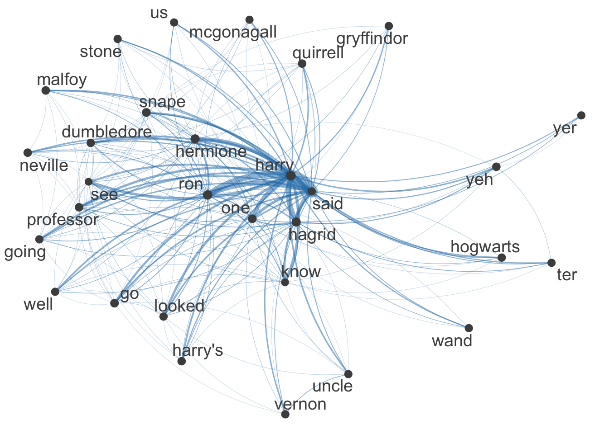

In this tutorial, we’ll learn about representing texts. This week, we’ll continue looking at the Harry Potter series. We’ll first install and load the packages for today’s notebook.
── Conflicts ────────────────────────────────────────── tidyverse_conflicts() ──
✖ dplyr::arrange() masks plyr::arrange()
✖ purrr::compact() masks plyr::compact()
✖ dplyr::count() masks plyr::count()
✖ dplyr::desc() masks plyr::desc()
✖ dplyr::failwith() masks plyr::failwith()
✖ dplyr::filter() masks stats::filter()
✖ dplyr::id() masks plyr::id()
✖ dplyr::lag() masks stats::lag()
✖ dplyr::mutate() masks plyr::mutate()
✖ dplyr::rename() masks plyr::rename()
✖ dplyr::summarise() masks plyr::summarise()
✖ dplyr::summarize() masks plyr::summarize()
ℹ Use the conflicted package (<http://conflicted.r-lib.org/>) to force all conflicts to become errors
library(quanteda)
Package version: 4.3.1
Unicode version: 14.0
ICU version: 71.1
Parallel computing: disabled
See https://quanteda.io for tutorials and examples.
library(quanteda.textplots)
First load all the Harry Potter books.
# Define the folder containing the .rda files (Change to your path). folder <-"/Users/mpang/Dropbox/Teaching Resources/DACSS_TAD/HarryPotter"# Get the list of all .rda files in the folderrda_files <-list.files(folder, pattern ="\\.rda$", full.names =TRUE)# Load all .rda files into the environmentlapply(rda_files, load, .GlobalEnv)
As a reminder, we have seven books — each stored as a character vector where each chapter is an element in that vector — now available in our workspace. These are:
philosophers_stone: Harry Potter and the Philosophers Stone (1997)
chamber_of_secrets: Harry Potter and the Chamber of Secrets (1998)
prisoner_of_azkaban: Harry Potter and the Prisoner of Azkaban (1999)
goblet_of_fire: Harry Potter and the Goblet of Fire (2000)
order_of_the_phoenix: Harry Potter and the Order of the Phoenix
half_blood_price: Harry Potter and the Half-Blood Prince (2005)
deathly_hallows: Harry Potter and the Deathly Hallows (2007)
As you’ll recall, we want to convert these to corpus objects that are easier to work with.
# add an indicator for the book; this will be useful later when we add all the books together into a single corpusphilosophers_stone_summary$book <-"Philosopher's Stone"# create a chapter indicatorphilosophers_stone_summary$chapter <-as.numeric(str_extract(philosophers_stone_summary$Text, "[0-9]+"))# add the metadatadocvars(philosophers_stone_corpus) <- philosophers_stone_summary
Document-Feature Matrix
A common first-step in text analysis is converting texts from their written format (“The dog runs down the hall.”) to a numerical representation of that language. The basic approach for representing a sentence is the document-feature matrix, sometimes also call the document-term matrix. Here, we are creating a matrix where the rows indicate documents, the columns indicate words, and the value of each cell in the matrix is the count of the word (column) for the document (row).
We can use quanteda’s dfm command to generate the document-feature matrix directly from the corpus object.
# create the dfmphilosophers_stone_dfm <-dfm(tokens(philosophers_stone_corpus))# find out a quick summary of the dfmphilosophers_stone_dfm
The summary of the document-feature matrix provides a few interesting notes for us. We have the number of documents (17 chapters) and the number of features (6,116). We also get a note about sparsity. This refers to the number of 0 entries in our matrix; here, 80.08% of our matrix is 0. The high sparsity of text data is a well-recognized trait and something we will regularly return to.
Below the summary statement, we can see the first few rows and columns of our document-feature matrix. The first entry in the matrix, for instance, indicates that “the” appears 204 times in the first chapter (text1) of “The Philosopher’s Stone”. This reminds us that we did not preprocess our corpus. Fortunately, the dfm() function explicitly includes the ability to preprocess when you are creating your matrix. Indeed, that’s why the text is lower-cased above; the function defaults to removing capitalization. We can be a bit more heavy-handed with our preprocessing as follows.
# create the dfmphilosophers_stone_dfm <-tokens(philosophers_stone_corpus,remove_punct =TRUE,remove_numbers =TRUE) %>%dfm(tolower=TRUE) %>%dfm_remove(stopwords('english'))# find out a quick summary of the dfmphilosophers_stone_dfm
Once we have our document-feature matrix, and have made some preprocessing decisions, we can turn to thinking about what we can learn with this new representation. Let’s start with some basics. It’s really easy to see the most frequent terms (features) now.
topfeatures(philosophers_stone_dfm, 20)
` harry said ron hagrid back hermione
4757 1213 794 410 336 261 257
one got like get know just see
254 198 194 194 188 180 180
professor looked now snape dumbledore around
180 169 166 145 143 142
We see the symbol “`” as the top 1 feature (which is annoying). Even though we removed punctuation, some special characters might not have been treated as punctuation by default. Let’s remove this symbol before moving on.
harry said ron hagrid back hermione one
1213 794 410 336 261 257 254
got like get know just see professor
198 194 194 188 180 180 180
looked now snape dumbledore around going
169 166 145 143 142 135
Perhaps you’d also like to know something like which words were only used within a particular text. We can look, for instance, at the final chapter to see what words were uniquely used there.
We started out earlier this semester by making those fancy little word clouds. We haven’t done much of that since, as we’ve been busy getting our hands on data, getting it into R, and thinking about some of the more NLP-centric types of approaches one might take. Now that we’re moving to representing texts, though, we can quickly return to word clouds.
The general idea here is that the size of the word corresponds to the frequency of the term in the corpus. That is, we are characterizing the most frequent terms in a corpus. Importantly, that means the axes don’t really mean anything in these clouds, nor does the orientation of the term. For that reason, though these are pretty, they aren’t terribly useful.
# programs often work with random initialization, yielding different outcomes.# we can set a standard starting point though to ensure the same output.set.seed(1234)# draw the wordcloudtextplot_wordcloud(philosophers_stone_dfm, min_count =50, random_order =FALSE)
One way to get a bit more utility is to use the comparison option within the function to plot a comparison of wordclouds across two different documents. Here’s an example.
# narrow to first and last chapterssmallDfm <- philosophers_stone_dfm[c(1,17),]# draw the wordcloudtextplot_wordcloud(smallDfm, comparison =TRUE, min_count =10, random_order =FALSE)
Zipf’s Law
Now that our data are nicely formatted, we can also look at one of the statistical regularities that characterizes language, Zipf’s Law. Word frequencies are distributed according to Zipf’s law. What does that mean? Let’s take a look at the distribution of word frequencies.
# first, we need to create a word frequency variable and the rankingsword_counts <-as.data.frame(sort(colSums(philosophers_stone_dfm),dec=T))colnames(word_counts) <-c("Frequency")word_counts$Rank <-c(1:ncol(philosophers_stone_dfm))word_counts$Word <-rownames(word_counts)head(word_counts)
Frequency Rank Word
harry 1213 1 harry
said 794 2 said
ron 410 3 ron
hagrid 336 4 hagrid
back 261 5 back
hermione 257 6 hermione
# We only want to label top 10 wordsword_counts$Label <-ifelse(word_counts$Rank <=10, word_counts$Word, NA)# now we can plot thisggplot(word_counts, mapping =aes(x = Rank, y = Frequency)) +geom_point() +geom_text(aes(label = Label),vjust =-0.5, hjust =0.5, size =3) +labs(title ="Zipf's Law", x ="Rank", y ="Frequency") +theme_bw()
Warning: Removed 5907 rows containing missing values or values outside the scale range
(`geom_text()`).
Updating our DFMs
Having seen what we are working with here, we might start to think that our matrix still contains too many uninformative or very rare terms. We can trim our DFM in two different ways related to feature frequencies using dfm_trim().
# trim based on the overall frequency (i.e., the word counts)smaller_dfm <-dfm_trim(philosophers_stone_dfm, min_termfreq =10)# trim based on the proportion of documents that the feature appears in; here, the feature needs to appear in more than 10% of documents (chapters)smaller_dfm <-dfm_trim(smaller_dfm, min_docfreq =0.1, docfreq_type ="prop")smaller_dfm
Document-feature matrix of: 17 documents, 885 features (42.28% sparse) and 6 docvars.
features
docs boy mr mrs dursley number four privet drive say normal
text1 9 30 21 45 7 5 8 9 7 5
text2 6 3 5 3 1 2 1 1 3 0
text3 1 4 3 0 1 4 5 6 0 0
text4 5 2 0 6 0 0 0 0 7 1
text5 14 26 0 0 0 2 0 0 12 0
text6 26 0 0 0 4 4 0 1 5 0
[ reached max_ndoc ... 11 more documents, reached max_nfeat ... 875 more features ]
Note that our sparsity is now significantly decreased. We can also do this in the opposite direction as a way of avoiding features that appear frequently in our corpus and thus are perhaps more uninformative in the particular setting but that would not be caught by a standard stop-word list. As an example, we may want to drop the feature “harry” from the analysis of Harry Potter books, since every.single.reference. to Harry increases that count.
Representing text-as-data as a document-feature matrix allows us to learn both about document-level characteristics and about corpus-level characteristics. However, it tells us less about how words within the corpus relate to one another. For this, we can turn to the feature co-occurrence matrix. The idea here is to construct a matrix that — instead of presenting the times a word appears within a document — presents the *number of times word{a} appears in the same document as word{b}. As before creating the feature co-occurrence matrix is straight-forward.
# let's create a nicer dfm by limiting to words that appear frequently and are in more than 30% of chapterssmaller_dfm3 <-dfm_trim(philosophers_stone_dfm, min_termfreq =10)smaller_dfm3 <-dfm_trim(smaller_dfm3, min_docfreq = .3, docfreq_type ="prop")# create fcm from dfmsmaller_fcm <-fcm(smaller_dfm3)# check the dimensions (i.e., the number of rows and the number of columnns) of the matrix we createddim(smaller_fcm)
[1] 775 775
Notice that the number of rows and columns are the same; that’s because they are each the vocabulary, with the entry being the number of times the row word and column word co-occur (with the diagonal elements undefined). Later on this semester, we’ll leverage these word co-occurrence matrices to estimate word embedding models.
For now, let’s use what we’ve got to try to learn a bit more about what features co-occur, and how, within our book. To do, we’ll visualize a semantic network using textplot_network().
# pull the top featuresmyFeatures <-names(sort(colSums(smaller_fcm), decreasing =TRUE)[1:30])# retain only those top features as part of our matrixeven_smaller_fcm <-fcm_select(smaller_fcm, pattern = myFeatures, selection ="keep")# check dimensionsdim(even_smaller_fcm)
[1] 30 30
# compute size weight for vertices in networksize <-log(colSums(even_smaller_fcm))# create plottextplot_network(even_smaller_fcm, vertex_size = size/max(size) *3)

The graph above is build on dfm, so it does not show which words are closer in a sentence. If we make fcm using the original documents, and set up a window, then we can have more information about which words are more likely to appear together.
We observe in the graph that “Uncle Vernon”, and “Professor McGonagall” often appear together. Of course, Harry, Ron, and Hermione also appear together.